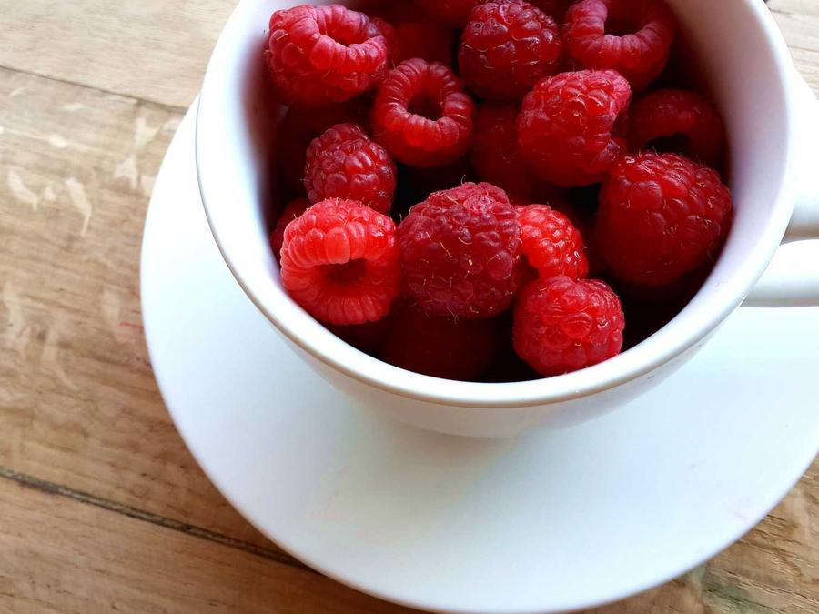

Hagamos que se vea y se entienda a la altura de lo que es.
Bergerac estudia marcas y proyectos, detecta qué está impidiendo que su valor se vea y se entienda, y construye la identidad, la estructura y el sistema digital que necesitan para avanzar.
Bergerac es un estudio digital dirigido por Pablo Figueroa, arquitecto UC radicado en Castro, Chiloé. La arquitectura aporta el método: comprender el contexto, ordenar la complejidad y construir sistemas capaces de sostenerse.
Cada proyecto mantiene continuidad entre la conversación inicial, las decisiones de diseño y aquello que finalmente se construye.
Mirar antes de intervenir
La formación en arquitectura enseña a no comenzar por la forma. Primero se observa el contexto, se reconocen las relaciones y se define qué debe resolver el proyecto. Esa misma lógica guía el trabajo de Bergerac con marcas, contenidos y experiencias digitales.
Llevar la dirección hasta el resultado
Una buena idea pierde fuerza cuando se fragmenta entre distintas etapas. Por eso identidad, información, diseño y desarrollo se entienden como partes de un mismo sistema, no como entregas independientes.
El punto de partida
No necesitas llegar con el diagnóstico resuelto.
Puedes traer una marca, una página, materiales sueltos o una idea todavía abierta. Primero entendemos qué está ocurriendo, qué sigue teniendo valor y qué tendría que cambiar antes de decidir qué construir.
01
La marca ya no refleja lo que somos.
Puede que no sea necesario reemplazarla por completo. Primero revisamos qué sigue teniendo valor, qué perdió coherencia y qué necesita evolucionar para volver a representar correctamente al proyecto.
Lo primero que miraríamosIdentidad · percepción · consistencia
02
Lo que hacemos tiene valor, pero cuesta explicarlo.
Cuando algo tiene valor, pero cuesta comprenderlo, el problema no siempre está en la calidad del proyecto. Puede estar en el mensaje, en el orden de la información o en la forma en que se presenta.
Lo primero que miraríamosPropuesta · relato · jerarquía
03
Nuestra presencia digital quedó atrás o creció sin orden.

Una página puede contener buena información y aun así no funcionar como sistema. Revisamos qué se acumuló, qué falta, cómo debe organizarse y qué recorrido necesita la persona que llega.
Lo primero que miraríamosContenido · estructura · experiencia
04
Tenemos una idea, pero todavía no sabemos qué forma necesita.
Una idea abierta no tiene que convertirse inmediatamente en una página, una marca o una aplicación. Primero definimos qué problema busca resolver y cuál es la primera forma que permitiría comprenderla y probarla.
Lo primero que miraríamosPropósito · alcance · primera versión
04
Metodo
Antes de diseñar, decidimos qué debe cambiar y qué merece permanecer.
El método Bergerac organiza el trabajo en cuatro etapas: comprender el contexto, definir una dirección, construir la respuesta y afinarla hasta que pueda sostenerse.
01
Estudiar
Reconocemos qué ya tiene valor, qué está generando distancia y qué necesita comprenderse antes de intervenir.
Observamos
Historia, contexto, audiencias, identidad, contenidos, experiencia actual y restricciones reales.
Contrastamos
Lo que el proyecto es, lo que intenta comunicar y lo que las personas alcanzan a percibir.
Resultado
Una lectura compartida del punto de partida.
02
Definir
Convertimos lo aprendido en una dirección clara: qué conservar, qué cambiar y qué sistema necesita el proyecto.
Idea rectora
Definimos el principio que mantendrá unidas las decisiones posteriores.
Estructura
Ordenamos mensaje, contenidos, jerarquías, recorridos y prioridades.
Alcance
Determinamos qué corresponde construir ahora y qué puede esperar.
Resultado
Una dirección que permite decidir sin improvisar ni acumular.
03
Construir
Traducimos la dirección en el sistema, las piezas y las experiencias que el proyecto realmente necesita.
Sistema
Definimos la identidad, el lenguaje, la estructura y las reglas que permiten mantener coherencia.
Producción
Diseñamos y desarrollamos las piezas necesarias según el alcance acordado.
Integración
Cada parte se construye considerando cómo se relaciona con las demás.
Resultado
Una solución real, usable y preparada para mantenerse.
04
Afinar
Probamos, corregimos y completamos la respuesta hasta que pueda funcionar, sostenerse y evolucionar.
Revisión
Evaluamos claridad, coherencia, comportamiento, legibilidad y funcionamiento en condiciones reales.
Corrección
Ajustamos aquello que todavía no expresa correctamente la dirección definida.
Preparación
Ordenamos la entrega, las reglas de uso y la base necesaria para futuras evoluciones.
Resultado
Un sistema que no depende de la improvisación para seguir funcionando.
Metodo
05
05 · trabajo seleccionado
Dos proyectos. Dos respuestas distintas.
En ambos casos, la presencia digital estaba por debajo de la calidad del trabajo real. A partir de ahí, cada proyecto exigió decisiones propias.
caso a · topografía de precisión
CasoSurvec
Convertir precisión técnica en una marca capaz de representarla.
Survec contaba con experiencia real en topografía, drones, GNSS y fotogrametría, pero su identidad y su presencia digital no expresaban con suficiente claridad la precisión, el conocimiento territorial ni la capacidad técnica de su trabajo.
la página construidasurvec
áreas involucradasRebranding · narrativa · arquitectura de información · diseño y desarrollo web
Punto de partida
Una empresa técnicamente capaz cuya identidad, discurso y presencia digital no alcanzaban a demostrar el nivel de los servicios que entregaba.
Lo que debía permanecer
Su relación directa con el territorio, la experiencia acumulada y la precisión técnica de su trabajo.
La decisión
Dejar de presentar una lista de servicios y construir una marca basada en lo que Survec realmente entrega: información territorial confiable para tomar mejores decisiones.
Lo que se construyó
Una nueva identidad, un sistema visual reconocible, un relato comercial y una página capaz de explicar servicios técnicos mediante aplicaciones, territorio y resultados comprensibles.
Resultado
Survec cuenta con una identidad coherente y una presencia digital preparada para respaldar conversaciones, propuestas y proyectos de mayor exigencia.
Dar a una obra excelente un lugar donde realmente pudiera verse.
AS Arquitectura ya tenía proyectos residenciales de gran calidad, pero su trabajo aparecía principalmente mediante fotografías y publicaciones dispersas que no permitían comprender completamente cada obra.
la página construidaas arquitectura
áreas involucradasDirección editorial · curaduría visual · arquitectura de información · diseño y desarrollo web
Punto de partida
Un estudio con arquitectura valiosa y material fotográfico disponible, pero sin un portafolio capaz de seleccionar, ordenar y presentar correctamente sus proyectos.
Lo que debía permanecer
Las obras, su materialidad, su relación con el paisaje y la manera sobria con que el estudio entiende la arquitectura del sur.
La decisión
La página no debía competir con las casas ni disfrazarlas mediante una identidad excesiva. Debía editar el material, ordenar el recorrido y permitir que la arquitectura fuera la protagonista.
Lo que se construyó
Una experiencia editorial basada en proyectos, fotografías de gran formato, jerarquía tipográfica y un recorrido preparado para observar cada obra con mayor profundidad.
Resultado
AS Arquitectura cuenta con un portafolio digital donde sus proyectos pueden comprenderse como obras completas y no como publicaciones aisladas.